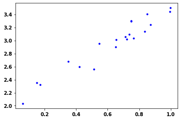

Classes > Classes provide a means of bundling data and functionality together. Creating a new class creates a new type of object, allowing new instances of that type to be made. Each class instance can have attributes attached to it for maintaining its state. Class instances can also have methods (defined by its class) for modifying its state. - init When a class defines an __init__() method, class instantiation automatically invokes __init__() for the newly created class instance. - def Define functions for the class - super() returns a temporary object of the superclass (proxy object) that allows us to acces methods of the base class - Python classes have an attribute called __dict__ which gives a Python dictionary containing the object’s instance variables and values as key value pairs - You can also get the dictionary by calling vars on an instance of the class - You can add a new variable to a class object - e.g. my_class_obj.var_new = 2 - or vars(my_class_obj)[var_new2 = 3
N.B. uses tf.nn primitive Neural Net (NN) Operations.
class MyDropout(Layer):def__init__(self, rate):super(MyDropout, self).__init__()self.rate = ratedef call(self, inputs):# Define forward pass for dropout layerreturn tf.nn.dropout(inputs, rate=self.rate)
Create the custom model
Same as above but using the custom layers instead
# Build the model using custom layers with the model subclassing APIfrom tensorflow.keras.models import Modelfrom tensorflow.keras.layers import Layer, Softmaxclass MyModel(Model):def__init__(self, units_1, input_dim_1, units_2, units_3):super(MyModel, self).__init__()# Define layersself.layer_1 = MyLayer(units_1, input_dim_1) self.dropout_1 = MyDropout(0.5)self.layer_2 = MyLayer(units_2, units_1)self.dropout_2 = MyDropout(0.5)self.layer_3 = MyLayer(units_3, units_2)self.softmax = Softmax()def call(self, inputs):# Define forward pass x =self.layer_1(inputs) x = tf.nn.relu(x) x =self.dropout_1(x) x =self.layer_2(x) x = tf.nn.relu(x) x =self.dropout_2(x) x =self.layer_3(x)returnself.softmax(x)
# Instantiate a model objectmodel = MyModel(64,10000,64,46)print(model(tf.ones((1, 10000))))print()model.summary()
Calculating the loss is the forward pass and calculating the gardients is the backward pass
import numpy as npimport matplotlib.pyplot as pltimport tensorflow as tf
# Create data from a noise contaminated linear modeldef MakeNoisyData(m, b, n=20): x = tf.random.uniform(shape=(n,)) noise = tf.random.normal(shape=(len(x),), stddev=0.1) y = m * x + b + noisereturn x, ym=1.5b=2x_train, y_train = MakeNoisyData(m,b)plt.plot(x_train, y_train, 'b.')

from tensorflow.keras.layers import Layer# Build a custom layer for the linear regression modelclass LinearLayer(Layer):def__init__(self):super(LinearLayer, self).__init__()self.m =self.add_weight(shape=(1,), initializer='random_normal')self.b =self.add_weight(shape=(1,), initializer='zeros')def call(self,inputs):returnself.m*inputs +self.blinear_regression = LinearLayer()
# Define the mean squared error loss functiondef SquaredError(y_pred, y_true):return tf.reduce_mean(tf.square(y_pred - y_true)) starting_loss = SquaredError(linear_regression(x_train), y_train)print("Starting loss", starting_loss.numpy())
Starting loss 8.915239
#collapse-output# Implement a gradient descent training loop for the linear regression modellearning_rate =0.05steps =25print("Function y = mx + b\n")for i inrange(steps):with tf.GradientTape() as tape: predictions = linear_regression(x_train) loss = SquaredError(predictions, y_train) gradients = tape.gradient(loss, linear_regression.trainable_variables)print(f"(m) = {linear_regression.m.numpy()[0]:.2f}\ (b) = {linear_regression.b.numpy()[0]:.2f}")print(f"(dm/dloss) = {gradients[0].numpy()[0]:.2f}\ (db/dloss) = {gradients[1].numpy()[0]:.2f}") linear_regression.m.assign_sub(learning_rate * gradients[0]) linear_regression.b.assign_sub(learning_rate * gradients[1])print(" Step %d, Loss %f\n"% (i, loss.numpy()))
# Define the categorical cross entropy loss and SGD optimizerloss_object = tf.keras.losses.MeanAbsoluteError()def loss(model, x, y, wd): kernel_variables = []for l in model.layers:for w in l.weights:if'kernel'in w.name: kernel_variables.append(w) wd_penalty = wd * tf.reduce_sum([tf.reduce_sum(tf.square(k)) for k in kernel_variables]) y_ = model(x)print(y_)return loss_object(y_true=y, y_pred=y_) + wd_penaltyoptimizer = tf.keras.optimizers.SGD(learning_rate=0.05)
Define the function to do forward and backward passes
# Define a function to compute the forward and backward pass@tf.functiondef grad(model, inputs, targets, wd):with tf.GradientTape() as tape:# forward pass loss_value = loss(model, inputs, targets, wd)# backward pass grads = tape.gradient(loss_value, model.trainable_variables)return loss_value, grads
Do the training
# Implement the training loopfrom tensorflow.keras.utils import to_categoricalimport timestart_time = time.time()train_dataset = tf.data.Dataset.from_tensor_slices((x_train,y_train))train_dataset = train_dataset.batch(32)train_loss_results = []train_accuracy_results =[]num_epochs=1200weight_decay =0.005for epoch inrange(num_epochs): epoch_loss_avg = tf.keras.metrics.Mean() epoch_accuracy = tf.keras.metrics.MeanAbsoluteError()# Training loopfor x, y in train_dataset:# Optimise the model# do forward and backward pass loss_value, grads = grad(model, x, y, weight_decay)# update parameters with optimizer optimizer.apply_gradients(zip(grads, model.trainable_variables))# Compute current loss epoch_loss_avg(loss_value)# Compile predicted label to actual label epoch_accuracy(y, model(x))# End epoch train_loss_results.append(epoch_loss_avg.result()) train_accuracy_results.append(epoch_accuracy.result())if epoch%100==0:print(f"Epoch {epoch:03d} : Loss {epoch_loss_avg.result():.3f}: MAE {100*epoch_accuracy.result():.2f}")print("Duration :{:.3f}".format(time.time() - start_time))
Tensor("my_model_18/my_layer_56/add:0", shape=(32, 1), dtype=float32)
Tensor("my_model_18/my_layer_56/add:0", shape=(28, 1), dtype=float32)
Epoch 000 : Loss 1.526: MAE 147.14
Epoch 100 : Loss 0.403: MAE 39.83
Epoch 200 : Loss 0.402: MAE 39.76
Epoch 300 : Loss 0.400: MAE 39.52
Epoch 400 : Loss 0.382: MAE 37.52
Epoch 500 : Loss 0.187: MAE 16.35
Epoch 600 : Loss 0.164: MAE 14.40
Epoch 700 : Loss 0.157: MAE 11.87
Epoch 800 : Loss 0.120: MAE 10.77
Epoch 900 : Loss 0.108: MAE 8.77
Epoch 1000 : Loss 0.095: MAE 9.43
Epoch 1100 : Loss 0.107: MAE 6.95
Duration :19.749